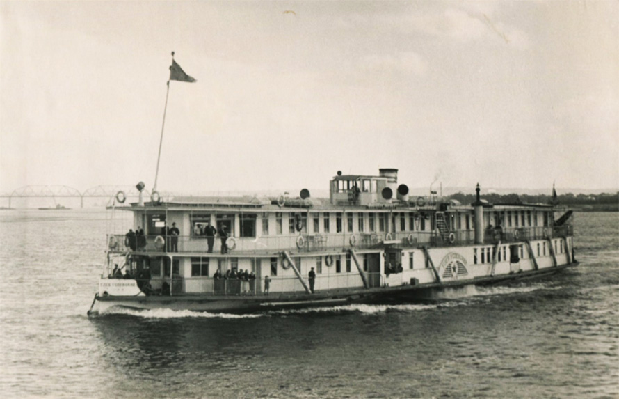

Вскоре Пучежский райвоенкомат попросил райком партии подготовиться к встрече первых возвращающихся фронтовиков. Задание это дали нашему отделу, и мы внесли свои предложения. Но главным вопросом было за чей счёт и где организовывать угощение. Решили, что встречать пароходы будем с оркестром, а угощение – у себя дома. Тех деревенских, которые приезжали поздно вечером, расположить на ночлег в Доме крестьянина. И вот в конце мая из Кинешмы позвонили, что пароход с пучежанами-фронтовиками прибудет к нам рано утром. По местному радио и на досках объявлений мы сообщили о предстоящей встрече земляков – и утром к пристани было не пробиться от большого количества народу. Оркестр сидел на веранде ресторана «Волга», и начал играть, когда из-за яра появился пароход. Но, заметив что пароход пустой, оркестру дали отмашку остановиться. С причалившего судна на берег сошёл только один пассажир – освободившийся по амнистии уголовник «Сашка нищий». Сказал, что «прокурор Ионин его посадил, Калинин освободил – и такой почёт, весь город встречает и оркестр играет». Палинин, услышав это, меня к себе «на ковёр» пригласил – мол, что за комедия, товарищ Осин? Я сразу позвонил в речной порт Кинешмы, а там пояснили, что пароход «Глеб Успенский» с нашими и юрьевецкими фронтовиками задержался с выходом и долго разгружался в Юрьевце, и сейчас должен быть уже на подходе к Пучежу. Я сообщил про это Палинину и побежал назад на пристань. Развернул назад собравшийся было оркестр и начавшим расходиться людям сказал, что «наш» пароход скоро будет. Скоро стали слышны песни с того парохода, и он появился сам. Оркестр заиграл, раздались крики приветствия и с берега, и с парохода. Были поцелуи, объятия, слёзы приехавших и встречавших…Потом встречи были скромнее и хлопоты по размещению и – при необходимости – ночлегу прибывавших взял на себя райвоенкомат.
Пучеж. Ресторан на набережной, нач. 20 века

Пароход "Глеб Успенский"
В 1947 году из Ивановского обкома партии в наш райком поступил звонок с требованием немедленно направить меня в Иваново, при себе иметь паспорт, партбилет и военный билет. Прибыв в обком я поинтересовался у начальника отдела Денисова в чём срочность? Он ответил, что вызвали всего 5 человек для беседы с прибывшей из Москвы комиссией «в погонах» - генерал, полковник и 2 старших лейтенанта. Те вскоре попросили Денисова освободить кабинет и не мешать работать. После беседы с генералом мы узнали, что обком партии рекомендовал нас, партработников-фронтовиков на учёбу в высшую школу контрразведки и отобрать должны 1 человека. В беседе мне рассказали даже то, что я сам о себе не знал, в том числе о моих родственниках (эти сведения МГБ собирало 2 месяца, как я позже узнал). После обеда нас на зашторенном автобусе повезли под Москву на базу школы, где мы сдавали экзамены по литературе, истории партии и истории СССР. А потом стали «измываться» над нами – проводили тесты на физическую выносливость – бег босиком по иголкам, неожиданное обливание холодной водой, падение в яму (после сразу измеряли пульс), поднятие и переноска тяжестей, полоса препятствий, термокамера… Читали какие-то тесты, опознавали человека по частям фотографии лица и многое другое. Длились эти испытания 3 недели. В конце была медкомиссия – за столом сидели врачи, а в конце стола – тот самый генерал. Нас раздели догола и тщательно осматривали. Врач осмотрел меня, взял моё личное дело и написал: «в приёме отказать, «меченый»». Генерал мне пояснил, что у меня на теле следы ранений, что является недопустимой для разведчика приметой. Я ответил, что с медкомиссии надо было и начинать, а не мучить нас так долго. Из нас пятерых тогда отобрали одного – жителя Тейково по фамилии Назаров. Позже от его земляков я узнал, что школу тот закончил, а потом его след пропал. Особенность той профессии – секретность. А замначальника ивановского управления МГБ мне тогда сказал, что это великое счастье, что меня не зачислили в ту спецшколу.
А.Осин. г.Пучеж, 1947г.
А.Осин с ученицами 9 класса. г.Пучеж, 1947г.
Удостоверение заведующего РОНО, 1948г.
1 августа 1947 года я сменил – или точнее вернулся – в профессию. Решением ивановского обкома партии меня утвердили Заведующим Пучежского РОНО, отдела народного образования. Мне было разрешено совмещать эту работу с преподаванием географии в школе. Работа в РОНО приблизила нас к учительским коллективам, в свой отдел из школ я переманил химика-биолога Троицкого и учителя литературы Петра Михайловича Юницкого. Последний был очень обаятельным и талантливым, учил учителей – и за труд свой был награжден несколькими орденами, в том числе орденом Ленина. Общение с ним было счастьем. Работы у меня было много и потому, что председатель райисполкома Никитина и её заместитель Лукичёв часто отсутствовали по уважительным причинам – а я также был заместителем председателя на общественных началах, то есть без оплаты. К тому же в 1951 году райком партии утвердил меня комиссаром штаба по заготовкам хлеба и картофеля. Такая нагрузка ослабила моё подорванное на фронте здоровье, и в итоге я попросил райком и обком партии освободить меня от должности заведующего районо, что было сделано 19 декабря 1951 года. И до отъезда со своей семьёй в Кострому я сосредоточился на преподавании географии в школе.
Теперь расскажу о своей семье.
Летом 1948 года я, как зав. РОНО приехал проверить работу пионерского лагеря в селе Дресвищи. Выйдя из лагеря, я увидел вдали идущих по тропе трёх девушек, в которых узнал сестёр Смирновых. Я решил – в шутку – на них «напасть» из-за дерева. Мария и Екатерина побежали, а младшая, Антонина им крикнула – мол, что вы испугались, это ведь Сашка Осин. Они тогда шли в Дресвищи к Марии Павловне Трапезниковой, своей тёте. В итоге я был приглашён в гости. За столом зашёл разговор о том, что девки Смирновы незамужние, а я холостой, и возраст уже за 30. Я сказал Марии: «возьму и приеду в Кострому свататься». Так и получилось – я собрался и приехал в Кострому, пришёл в гости к Смирновым. Попросил маму Маши, Елизавету Павловну отдать дочь за меня. Она ответила – «Ты всё время шутишь, Саша, это же не серьёзно». Все Смирновы меня знали ещё с Пучежа. Меня поддержали старший брат Марии Сергей и его жена Антонина. И регистрация брака состоялась. Свадьбу сыграли скромно, и я увёз молодую жену в Пучеж. Ровно через год после свадьбы, 8 августа 1949г. у нас родилась первая дочь Ирина, а 2 декабря 1950г. – вторая дочь, Ольга.
Супруги Осины. г.Пучеж, 08.11.1948г.
Е.П.Смирнова г.Кострома, 1955г.
Супруги Осины с дочерью Ириной. г.Пучеж, 1950г.
Так образовалась наша семья Осиных, которая, как я озаглавил свои воспоминания – моё главное богатство. В Пучеже Мария, выпускница физмата ивановского пединститута, продолжила, как до этого в Костроме, преподавать математику в средней школе. Жили мы в нашем доме вместе с сестрой Анной и её дочерью Валей. А после 1951-1952 учебного года, в связи с затоплением части г.Пучеж при строительстве Горьковского водохранилища и переносом домов (в т.ч. нашего) на новое место моя семья выехала из Пучежа в Кострому по месту жительства матери моей жены. Там горотдел народного образования предложил мне должность директора новой школы, а жене – учителя математики в 31-й средней школе. 18 июля 1952 года я был утверждён директором школы №23 г.Костромы. Здание это стоит на углу улиц Московская и Вокзальная и используется по назначению до сих пор, как школа при интернате для детей с нарушением опорно-двигательного аппарата. Сначала это была чисто мужская школа, а затем стала смешанной (девочки и мальчики).
г.Кострома. Школа №31, 1950-е гг.
А.Осин с дочерями и родственниками на крыльце школы №23, 1955г.
Здание школы при интернате (бывшая №23). г.Кострома,2025г.
А.Осин с дочерьми и тещей. г.Пучеж, 1952г.
Супруги Осины. г.Кострома, 1952г.
Семья Осиных у школы №23. г.Кострома,1954г.
М.Осина с дочерьми и племянником. г.Кострома, 1951г.
Волейбол на спортплощадке у школы №23. г.Кострома, 1956г.
Ира и Оля Осины. г.Кострома, 1958г.
Семьи Марковых и Осиных, А.Разумова. г.Пучеж, 1954г.
М.Осина с дочерями Ирой и Олей. г.Кострома, 01.05.1959г.
М.Осина и А.Осин с внуком. г.Кострома, 1976г.
Пожарная каланча. г.Кострома, 1952г.
Сквер у горисполкома. г.Кострома, 1952г.
Кострома. Вид на правый берег с ул.Лесной. 1952г.
Заведующая гороно (городским отделом народного образования) познакомила меня с секретарём Заволжского райкома партии Сабуровым П.И. и председателем райисполкома Петровым К.Л., которым, по их просьбе, я подробно рассказал о своей трудовой и общественной деятельности. Приняли меня доброжелательно, с уверенностью, что мы найдём общий язык и взаимопонимание в работе. По опыту прошлой работы я попросил руководителей района не особо вмешиваться в учебно-методический процесс, помогая больше в хозяйственных вопросах. Здание школы было новостройкой – имелись недоделки по строительству, не был решён вопрос с финансированием, будучи открыта как средняя, она в документах районо числилась как начальная. Не хватало мебели – парт, классных досок, лабораторных шкафов, учебно-наглядных пособий, а через месяц уже начинался учебный год. У заведующего облоно мы попросили ускорить поставку мебели и оборудования в школу. Только 10 августа привезли парты – на их покраску с заводов были выделены маляры, а краску предоставила строительная организация, помощь оказывали также родители будущих учеников. Плохо было то, что я почти не был знаком с местным населением, приходилось спешно решать вопрос комплектования школы учительскими кадрами и учащимися, но мы руки не опускали, стараясь не ударить в грязь лицом. Само здание выглядело красиво, и расположено было в живописной зелёной роще. Поселились мы с женой и младшей дочерью в квартире в самой школе – с жильем в послевоенные годы было непросто.
1 сентября 1952 года в торжественной обстановке школа была открыта и начались занятия – хотя недоделки по строительству оставались. Из-за этого я отказывался подписывать акт о приемке школы, что повлекло неудовольствие начальства и даже угрозы снять меня с должности. На что я отвечал, что угроз не боюсь – 150 из 200 дней Сталинградской битвы я со своими матросами «стоял насмерть», дважды был контужен и один раз тяжело ранен. И начальники отступились…
Коллектив учителей сложился работоспособный – постепенно мы приводили в порядок и развивали прилегающую к школе территорию. Выпиливали старые деревья, сажая тут же молодняк, обустроили баскетбольную и волейбольную площадки, был заложен сад и огород, построен стрелковый тир, создана метеорологическая площадка с ценным оборудованием. В подвале школы были обустроены рабочие мастерские, чего в других школах не было. Усилия эти были оценены руководством, и меня избрали членом бюро райкома партии – а вскоре и депутатом райсовета и даже заместителем председателя райисполкома на общественных началах. Такие нагрузки стали мешать директорской работе – но всё равно я всё больше втягивался в школьные дела, которых было много. Наши спортсмены на соревнованиях стали часто побеждать многие ранее «непобедимые» команды, так нас стали признавать в городе. Спортивные достижения были заслугой опытного преподавателя Леонида Михайловича Иерусалимского. Зимой школьную спортплощадку заливали под каток. И многие костромичи, даже с левого берега приезжали к нам кататься – там катки заливали позже.
Дом культуры завода "Рабочий Металлист". г.Кострома, 1953г.
Заводской пропуск Осина А.Д.
г.Кострома. Заволжский район, 1963г.
Мой приезд в Кострому совпал с началом строительства в Заволжском районе 2- и 3-этажных кирпичных домов. Мне райисполком поручил контролировать это строительство и асфальтирование улиц и тротуаров. В таких «загрузках» была и моя вина, ведь в документах я характеризовался как активист. И, как директор школы, где учились дети работников завода «Рабочий Металлист», я быстро познакомился с родителями своих учеников – от директора до рядового рабочего. С тех пор на заводе меня считают ветераном, хотя ни за станком, ни в заводском отделе я не работал, а трудился в заводском совете ветеранов, и ещё, уже на пенсии, преподавал в работающем при заводе филиале Калининского индустриального техникума.
Л.Я.Флорентьев
30 ноября 1956 года начался новый период моей биографии – меня избрали секретарём райкома партии (по идеологии). А я, только обустроившись в школе, рассчитывал отдохнуть и от «районных» дел. Но – опять «затолкали» на партийную работу. У первого секретаря райкома Агафонова был сложный характер, и когда ещё через год, 26 ноября 1957г. второй секретарь Стригалёв Е.В. ушёл работать в Свердловский райком, меня назначили на его место, упразднив мою предыдущую должность. «Первый» часто болел и работать приходилось в основном мне. К тому же сам взял на себя ещё 2 нагрузки – возглавил районный штаб народной дружины и районный совет пионерской организации. Ту и другую работу наладил так, что нашим опытом заинтересовались даже в Москве – от МВД и ЦК ВЛКСМ стали привозить к нам делегации, в т.ч. иностранные. Помимо перечисленного я продолжал курировать строительство жилья в районе методом «народной стройки». В результате здоровье моё ухудшилось – давали о себе знать спина, ноги, а, главное, сердце. И когда на одной из партконференций Агафонова освободили от должности, то на его место по моей просьбе перевели уже работавшего здесь Стригалёва. Работать с ним стало легче и плодотворнее – но вскоре случилась новая перестановка. Стригалёва с повышением перевели в горком партии, а меня по рекомендации секретаря обкома Л.Я. Флорентьева 5 мая 1960 года избрали первым секретарём райкома партии, где я проработал до 28 июля 1962 года и был освобождён от должности в связи с инвалидностью (заболевание сердца), получив 2-ю нерабочую группу. Вот к чему привела моя большая активность и быстрый карьерный рост в партийной иерархии, сочетаемые с общественной деятельностью.
О своей жизни скажу словами поэта Александра Твардовского:
Нет, жизнь меня не обделила,
Добром своим не обошла.
Всего с лихвой дано мне было
В дорогу - света и тепла.
Но не сумел я это растянуть до своих уже почти 78 лет. Слишком много сил отдавал работе, от чего рано стал инвалидом. Но работать всё равно продолжал и лишь немного не дотянул трудовой стаж до 50 лет. Это была – уже после партийной работы и восстановления от последствий тяжелой операции – сначала работа с пионерами и молодежью.
Ещё в 1963 году председатель завкома завода «Строммашина» Терентьев попросил меня посмотреть вновь построенный на реке Кубань под Костромой пионерский лагерь, названный в честь первой женщины-космонавта В.Терешковой. Я дал им ряд советов, многие из которых были исполнены. И далее принял посильное участие в подготовке к сезону 1964 года, что было не трудно, так как в то же время я читал лекции в педагогическом институте по методике пионерской работы. По моей рекомендации работать в лагерь поехали талантливые студенты, некоторые из них впоследствии защитили кандидатские и докторские диссертации. Также мне было предложено работать в пионерских лагерях заместителем начальника по методической работе. Так я отработал 7 лет, причем от оплаты отказывался – оформлял всё через путёвки. От руководства всё же получал подарки, в том числе много лет прослуживший нам фотоаппарат «ФЭД-3». Студенты-вожатые проходили практику под моим руководством – жизнь в лагере кипела с утра до позднего вечера. Жизнь на природе в движении, хорошее питание пошли мне на пользу, я окреп.
Также в июне 1965 года завуч Школы рабочей молодёжи завода «Рабочий металлист» предложил мне преподавать там географию. Врачи не возражали, но просили не перегружать себя работой. В том же году «Рабочий металлист» отмечал 40-летие, и начался, в том числе с моим участием, сбор информации для издания книги по истории завода. В самой же ШРМ я решил создать комнату краеведения «Наше Заволжье», для которой учителя и ученики собрали много фотографий и текстового материала о нашем районе. Эту комнату посещали пионеры, ветераны, живущие в районе, работники райкома КПСС. Жаль, что комната не сохранилась после моего ухода с этой работы. И ещё вёл занятия для мастеров завода, разработав курс «Психолого-педагогическая работа мастера со своим коллективом». Несколько лет спустя заводской техникум был подчинен на правах филиала Калининскому индустриальному техникуму и я стал преподавать там обществоведение и политэкономию. Для такой работы я прочитал и законспектировал «Капитал» Маркса. И в ШРМ, и в техникуме обучались работники завода, которые избирали меня долгое время профоргом цеха, и около 17 лет я был заместителем председателя заводского совета ветеранов.
Удостоверение к знаку "Лучшему пионервожатому"
Удостоверение общества "Знание"
С работниками Димитровского райкома ВЛКСМ. г.Кострома, 1975г.
С родственниками у дома. г.Кострома, 09.05.1985г.
Все эти годы, включая и нынешнее время, меня не забывают те, с кем я работал – руководство завода «Рабочий металлист», общество «Знание», коллектив средней школы №23, районный совет ветеранов. И теперь, на 50-летие Победы я получил от всех их подарки и визиты, так как сам уже никуда не выхожу. Это результат моей 40-летней деятельности в Костроме – получается, что решение о переезде в этот город из родного Пучежа было правильным. И на родине в послевоенное время, и в Костроме мне много раз оказывали доверие, выбирая либо назначая в различные государственные и общественные организации. Райисполком, райкомы, горком и областной комитеты КПСС – в бюро последнего я работал с 1961 по 1963 годы, участие в партийных конференциях всех уровней… За мою службу в годы Великой Отечественной войны и работу в мирное время я получил множество наград, среди которых 11 медалей и 2 ордена, Почетные грамоты и благодарственные письма от Центрального совета Всесоюзной пионерской организации, ЦК ВЛКСМ, областных, городских и районных партийных и комсомольских комитетов, от руководства заводов «Рабочий металлист» и «Строммашина», областного УВД, Костромского пединститута, общества «Знание». За все годы своей работы я не имел ни партийных, ни административных взысканий. Как будто обо мне написал А.Твардовский:
«И будто дело молодое –
Всё, что затеял и слепил,
Считать одной лишь малой долей
Того, что людям должен был».